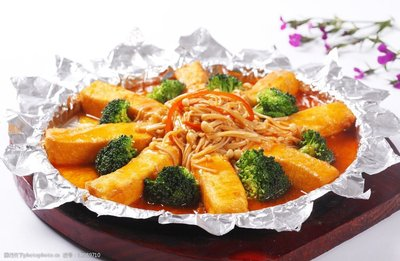

菜品介绍
一品豆腐是山东孔府菜中的传统名菜，以豆腐为主料，配以多种珍贵食材烹制而成。此菜造型美观，豆腐嫩滑，汤汁鲜美，营养丰富，是孔府宴席上的经典菜品。
一品豆腐选用优质豆腐，经过精细加工，保持了豆腐的嫩滑口感，同时吸收了各种配料的鲜味。此菜汤汁醇厚，豆腐入口即化，味道鲜美，体现了孔府菜"食不厌精，脍不厌细"的特点。
历史背景
一品豆腐源于孔府菜，已有数百年历史。孔子主张"食不厌精，脍不厌细"，孔府厨师遵循这一理念，将普通的豆腐通过精细加工和搭配珍贵食材，提升为宴席上的精品菜肴。
"一品"在古代是最高官阶，这道菜取名"一品豆腐"，既体现了其在孔府菜中的地位，也寓意着食客的尊贵身份。这道菜后来传入民间，成为鲁菜中豆腐菜品的代表作，展现了鲁菜善于将普通食材烹制成美味佳肴的特点。
制作步骤
1准备豆腐
将嫩豆腐切成大小均匀的方块，用开水焯一下，去除豆腥味，捞出沥干水分。
2准备配料
将香菇、火腿、鸡肉、笋等配料切成小丁，虾仁洗净备用。
3炒制配料
热锅凉油，放入葱姜爆香，加入配料丁翻炒，加入料酒、酱油、盐调味。
4烩制豆腐
将豆腐放入锅中，加入高汤，小火慢炖15分钟，使豆腐充分吸收汤汁。
5勾芡出锅
用淀粉水勾芡，使汤汁浓稠，淋上香油，撒上葱花即可出锅。

食材清单
主料
- 嫩豆腐 1块(约400克)
配料
- 香菇 4朵
- 火腿 50克
- 鸡胸肉 50克
- 笋 30克
- 虾仁 30克
- 青豆 20克
调味料
- 高汤 500毫升
- 料酒 1汤匙
- 酱油 1汤匙
- 盐 适量
- 淀粉 2茶匙
- 香油 1茶匙
- 葱花 适量
营养信息
* 营养信息为每份估算值，实际数值可能因食材和烹饪方式有所不同